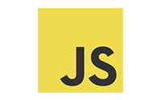
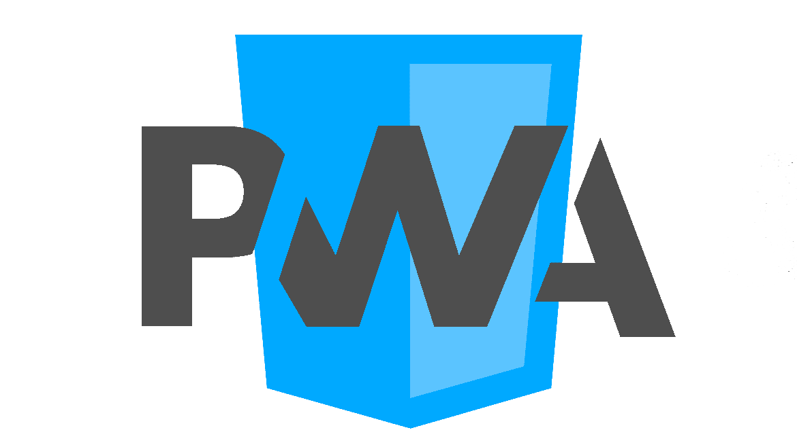
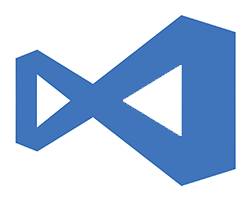
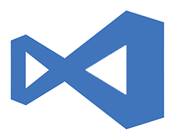

Overlord
Um sistema PDV(ponto de venda) desenvolvido totalmente para a web e totalmente responsivo. Controla as financas, estoque e é um sistema PDV (ponto de venda) que emite nota não fiscal e tem a possibilidade de emitir NF-e.
Tecnologias utilizadas
Desenvolvido em PHP orientado a objetos, utilizando jQuery e Bootstrap para o Frontend. Para melhor performance, é utilizado o banco de dados MySQL.


M&M Cigar Co.
Um site estático estilo porfolio divulgando a marca, serviços prestados, endereço e formas de contato. Pode ser usado como landing page.
Tecnologias utilizadas
Este site foi criado utilizando HTML5 puro, JavaScript e o framework Bootstrap 4.

Pitanshop
Pitanshop é um marketplace para o comércio da cidade de Pitangueiras - SP onde o cliente pode ver produtos em promoção, pegar informações de lojas e, em alguns casos, comprar algum produto sem precisar comparecer na loja, utilizando a API PagSeguro.
Tecnologias utilizadas
Este site foi criado em PHP, com banco de dados em MySQL, com uso de jQuery para a transferência e comunicação com a API do PagSeguro.
Mais Bela ERP
O Mais Bela ERP é um sistema de gerenciamento desenvolvido utilizando tecnologias Web e tem como função o gerenciamento de uma distribuidora de maquiagens.
O sistema possui controle completo de estoque, funcionários, fornecedores, produtos e clientes, e possui também um sistema de emissão de NF-e integrado, e também possui um módulo integrado de criação de remessas de boletos bancários no padrão CNAB240 e CNAB400, atendendo os principais bancos do Brasil.
O Mais Bela ERP possui suporte para multi-lojas, ou seja, várias lojas podem acessar e manipular dados simultaneamente, além de emitir notas e efetuar vendas.
Em conjunto com o sistema ERP, o Mais Bela possui um APP de vendas externas, onde se comunica direto com o sistema principal. Este foi desenvolvido utilizando a tecnologia PWA (Progressive Web App), que cobre toda e qualquer interface que o Vendedor venha a utilizar.
Tecnologias utilizadas
Este sistema foi criado em PHP utilizando a metodologia orientada a objetos com jQuery e AJAX para a comunicação entre a API do SEFAZ. FOi utilizada a distribuição sped-nfe para essa funcionalidade e a distribuição opencnabphp para a criação das remessas de boletos bancários.
Para a criação do APP de Vendedor externo, foi utilizada a tecnologia PWA (Progressive Web App) com back-end em php para a comunicação com o sistema principal.

Hentz
O sistema Hentz foi desenvolvido para auxiliar na venda e controle de lotes imobiliários. Possui integrado aos Lotes listados um sistema de PDV (Ponto de Venda) onde é criado o contrato inicial para a venda de lotes. Possui integração para a criação de remessas de boletos bancários com o padrão CNAB240 e CNAB400, cobrindo todos os maiores bancos do Brasil.
Tecnologias utilizadas
O sistema Hentz foi desenvolvido utilizando o PHP com metodologia orientada a objetos, MySQL e jQuery com AJAX para a comunicação entre os módulos e criação dos contratos de venda, bem como a comunicação com o banco de dados.
Ferramentas que utilizo
 
